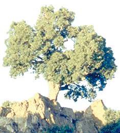

L'ultimo giorno incontro, seduto sotto la quercia, un signore molto anziano con lo sguardo concentrato verso l'orizzonte. Mi siedo anch'io salutandolo, lui mi sorride ricambiando il saluto. Dopo un po' estrae da una tasca una pipa dal fornello piccolissimo e dal cannello molto lungo e sottile; con la mano libera pesca dentro un sacchetto di pelle che tiene legato alla cintura e ne recupera una piccola presa di kif, la canapa indiana ripulita manualmente dai semi e dalle fibre più grossolane. Ne fa una pallina inumidendola con un po' di saliva, la inserisce nel fornello e mi allunga la pipa. L'accendo e con un paio di tiri è finita, soffio nel cannello e la cenere schizza fuori descrivendo una parabola per poi essere catturata dal vento che se la porta verso valle. Lui riempie nuovamente la pipa e si fa la sua fumata. Rimaniamo in silenzio a goderci il panorama e l'aria tiepida del tardo pomeriggio. Lo saluto alzandomi per andare e mi risponde sempre con un sorriso. Non mi ha chiesto chi ero, da dove venivo, che cosa volevo; sono stato suo ospite e basta, non serviva saperlo.
Testi e immagini di michele ungaro
Impaginazione e grafica iosto chinelli